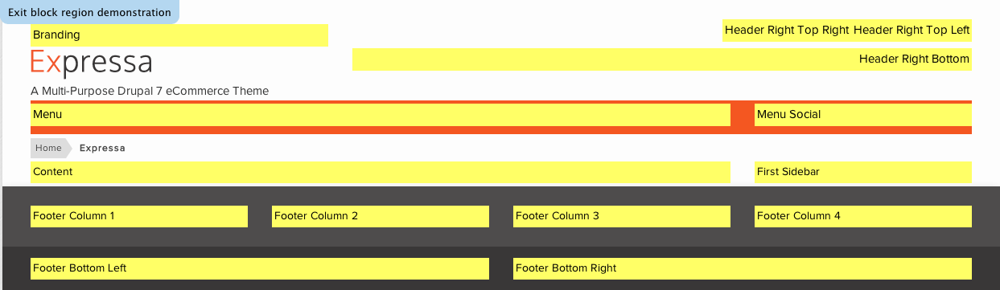
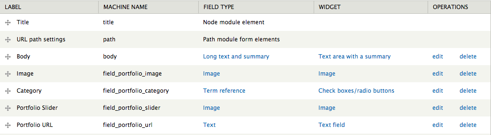

We are Refaktor. Clean code and designs, excellent support.
A Multi-Purpose Drupal 7 theme powered by Twitter Bootstrap and Font Awesome. Expressa features a fully responsive design, easy to use theme settings and follows Drupal coding standards. For theme support that cannot be found in this documentation, please visit our support forum. Once you have registered please contact us via our ThemeForest author page with your forum username so you can be granted posting rights.
Given the somewhat complex nature of the modules used to power an eCommerce theme, if you are not familiar with them already we highly recommend you perform the full demo installation so you can become familiar with them.
There are several ways Expressa can be installed. For existing sites that already have content, the first method will only involve the installation and activation of the theme. The second option includes a full Drupal 7 install with the same SQL database file used to create the theme demo. Please choose which installation method works best for you and follow the instructions.
Option 1:
Option 2:
The following steps are designed for people that have experience manually installing Drupal and importing databases. If you do not feel comfortable performing these steps yourself, contact your server administrator for help. NOTE this option is for a completely new Drupal install. Do not import the provided SQL file into an existing Drupal database or you will lose all of your data!
If you do not wish to perform the full demo install, we highly recommend that you use our Expressa Content module. This is a Features module that will automatically create all the content types, fields, views and other profiles needed to utlize everything you see on the demo. It is also a good way to ensure you install all the necessary modules as they are all dependencies for the custom module.
Simply upload the expressa_content folder found in the root of the download files as well as all the modules found inside the drupal_7/sites/all/modules folder to the /sites/all/modules folder on your installation. Then once you activate the Expressa Content module you will be prompted to activate all the dependencies. Once the module is activated everything you need will be created and you can begin adding your own content/modifying the existing settings to your needs.
Expressa comes with a shell sub-theme called Expressa_sub that you can use to make customizations to the style and template structure of the parent theme without having to modify the parent theme itself. This is useful if you plan on updating the parent theme as we release updates on ThemeForest. If you performed the full install you will already see Bricks in the list of themes available. If you did the standalone install you can find the Bricks.zip file in the root of the download files and you can install it like any other theme.
There is an empty stylesheet already defined which is /css/custom.css (inside the sub-theme folder). Use this file to add all of the custom CSS that you plan on using. You can also copy any template file from the /expressa/templates folder into the /expressa_sub/templates folder and it will listen to the sub-themes template file first. This will allow you to update the parent theme as we make updates without losing your customizations. Just pay attention to the changelog and compare the parent theme files with yours and make any adjustments as needed.
You will need to configure the sub-themes theme settings separately from the parent theme's, so visit /admin/appearance/settings/expressa_sub to configure the theme settings for the sub-theme.
Expressa features 14 block regions where you can add your own custom content. Visit yourdomain.com/admin/structure/block to add your own content to the defined block regions. Press "Add Block" to create a new custom blog, or select an existing block from the Disabled list below the defined block regions.
For optimum use of Expressa we recommend the installation of the following modules which are used by the theme demo and are included with the theme download files:
Required
Optional
Expressa includes a powerful set of theme settings that allow you to configure many aspects of your site which can be accessed by visiting yourdomain.com/admin/appearance/settings/expressa. All options have default values set, but you should go through each one and adjust them to your liking.
Expressa supports the Drupal Commerce module, a powerful eCommerce framework for building online stores. Drupal Commerce has a complete set of documentation which we highly recommend reading if you have never used DC before. We will go over some of the basics and highlight the aspects of the theme that enhance DC and how you can use them on your site.
All of the Commerce administration links you will need can be found under /admin/commerce. There you can manage customer profiles and orders, add/edit/remove products, and set global options. Under the "Products" link you will see a tab that reads "Product Types" which is where you can create your own product types.
In order to display your products as node content, a custom content type with a product reference field type has to be used. We recommend using the "Inline Entity Form - Multiple Values" widget type with the Product Reference field as this allows you to create multiple variations of the same product. For example, you can have a single item called Men's T-Shirt and have several varations with different colors and sizes.
All products in the Expressa demo use the Product Display content type, which uses the node--product-display.tpl tempalte file.
Expressa includes a customized Shopping Cart block which appears in the header and scroll menu if enabled. This places all items currently in the cart inside a compact drop down window where users can review the contents, delete individual items, and view the cart overview and checkout pages. The demo uses the Shopping Cart block inside the Header Right Top Right block region.
Expressa's store page is a custom search results Views page that uses the Search API and Faceted Search modules. This allows the user to be able to dynamically refine product searches by things like brand, category, price, etc. If you are unfamiliar with Search API and Faceted Search and how to properly configure them, we highly recommend you use the Expressa Content features module to automatically create all the views and profiles for you. This will give you a good starting point to work off of. For some more information about the Search API refer to that section of this documentation.
There are many payment methods available for Drupal Commerce that come in the form of Modules. Each has their own set of configuration options and are relatively straight forward to implement. Visit the following page for a list of the modules that are available.
Expressa features custom block view templates which display products in a carousel. The carousels are touch friendly for mobile devices and are a great way to show off products on your website. Either use the Expressa Content features module provided in the download files or look inside the /views_exports for code you can use to import these views on your site.
Drupal's Search API and Faceted Search modules are very powerful tools that, when combined with Drupal Commerce, give users the ability to filter their product searches by things such as price, category, brand, etc. The configuration of these modules can be a bit confusing at first, but once you understand the basics their uses become almost infinite. We will do our best to introduce you to these basic concepts, but if you are unfamiliar with these modules the following presentation from Drupalcon Munich is a great introduction.
The following modules are required:
Once you have the required modules installed, the first step is to visit /admin/config/search/search_api to set up your search server and index. Press the Add server button, give it a title and choose "Database service" from the Service class dropdown option. We also recommend setting the minimum number of words required to be indexed to "1" to ensure everything related to your store is indexed.
The next step (and the more complex of the two) is setting up your search index. This creates all the information needed to power the store page and faceted search functionality. To begin press the Add index button and give your index a title (we recommend Product Display, note the name as it will be used later on on the Store view page).
If you have installed all the required modules there will be a total of 6 edit menus available for your index: status, settings, fields, workflow, facets and sorts.
Status is where you can disable the index entirely, re-index the content, or completely clear the current contents of your index.
Settings is where you can change things like the name, the server used, whether or not to index items immedietly, etc.
Fields is where you tell exactly what content you want indexed. We recommend the you enable the following fields to be indexed: content type, title, date created, and all the product variation elements you want to be used in your facet search.
Workflow is a collection of options that will alter the way the index content is handled. We recommend that you enable the Product Display filter and the Search API Ranges. When you enable the Search API Ranges a callback setting option will appear below the Data Alterations options. From there, check off the Product Variations >> Price >> Amount (decimal). This will allow you to use the Ranges display widget on your price facet.
Facets is where you enable and configure the facet blocks themselves. Each facet you enable has their own set of configuration options which you can go through and set to your liking. In most instances the defaults will be sufficient. These blocks will now be available to add to the sidebar region and ordered to your liking. These will only show up on the store page.
Sorts is where you can configure the Search Sorts block. These render as button links that will sort the products in ascending/descending order by the values you select.
The final step is to create your store view page. We recommend you use the code found inside the /views_exports folder to import the view with the correct settings.
Expressa's Image Slider is powered by Flexslider and is easy to configure. It uses a custom content type called "Image Slider" with two fields: field_slider_image (image field) and field_slider_caption (long text).
The slider itself is a view block which you can import using the /views_exports/image_slider.txt export code.
Expressa also includes support for a side-wide highlight section. To use this, simply use the following syntax inside a block and place it inside the Highlight block region:
<div class="container">
<div class="row-fluid">
<div id="highlight-content" class="span9">
This is a site-wide call to action block region!
</div>
<div id="highlight-button" class="span3">
<a href="#"><div class="button-wrap">BUY NOW</div></a>
</div>
</div>
Expressa's Portfolio offers an area to showcase projects or other elements of your site that may not be related to your store. Custom view templates allow you to showcase your portfolio content in a nicely organized grid that can be sorted via filters generated by taxonomy terms. As with the other elements of the theme, if you are not using the full demo we recommend you use the Expressa Content module which will automatically create the content type, fields, taxonomy vocabulary/terms and views necessary to fully utilize the Portfolio. We will also go over the different areas of the portfolio in detail below:
To make use of the filters on the view page, you need to set up a taxonomy vocabulary called Portfolio Categories. From there you can add as many different terms as you will need for your portfolio. This will also be used as a term reference field type with the Portfolio content type which will allow you to assign your items to their respective categories.
The theme utilizes a content type called "Portfolio" so if you are configuring everything manually make sure you use the same content type name. Reference the image below for all the fields that are required:
The Expressa demo uses three separate views for the portfolio: a page view, a block view for the filters and a block view for the related items carousel that appears on the single portfolio items page. If you are setting up your views manually, please use the export code found inside the /views_exports folder in the root of the theme/download files. The Portfolio Filters view is called in the Header of the Portfolio page view as a global view area.
Expressa has built-in support for several widgets, below is the markup you will need to use them on your site in blocks and node content.
Update: As of June 13th the old 1.0 version of the Twitter API was discontinued. Because of this some changes had to be made to this section and some additional settings are needed for it to function correctly. Visit https://dev.twitter.com/apps and login with your Twitter account. You will have to make an App in order to receive the necessary OAuth keys required for the Twitter feed. Once you have them you can enter them into the theme settings under the Twitter tab.
<div class='tweet query'></div>
<script type="text/javascript">
jQuery(document).ready(function ($) {
$(".tweet").tweet({
modpath: '<?php global $root; echo $root;?>/includes/twitter/',
username: "envato",
avatar_size: 34,
count: 3,
loading_text: "loading tweets..."
});
});
</script>
<script type="text/javascript">
jQuery(document).ready(function ($) {
$('#flickr_widget').jflickrfeed({
limit: 6,
qstrings: {
id: '39415781@N06'
},
itemTemplate: '<li><a href="{{image_b}}"><img src="{{image_s}}" alt="{{title}}" /></a></li>'
});
});
</script>
<ul id="flickr_widget" class="thumbs"></ul>
<div id="google_map"> <iframe width="1080" height="370" src="https://maps.google.com/maps?f=q&source=s_q&hl=en&geocode=&q=900+Bagby+St+Houston,+TX+77002&sll=33.687,-117.774252&sspn=0.324522,0.682526&t=m&ie=UTF8&hq=&hnear=900+Bagby+St,+Houston,+Harris,+Texas+77002&ll=29.761779,-95.370008&spn=0.003725,0.012864&z=17&iwloc=A&output=embed"></iframe><br /> </div>
<script type="text/javascript">
jQuery(document).ready(function ($) {
$('ul#quotes').quote_rotator();
});
</script>
<ul id="quotes">
<li>
<p>Quote text goes here</p>
- John Doe
</li>
<li>
<p>Here's another quote</p>
- John Doe
</li>
</ul>
Thank you for purchasing Expressa, we hope you enjoy using it as much as we enjoyed making it!
For theme support that cannot be found in this documentation, please visit our support forum. Once you have registered please contact us via our ThemeForest author page with your forum username so you can be granted posting rights.